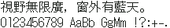

字样资料 / DotGothic点黑16
DotGothic16 点黑 16×16
样文完整 · 16×16 · 繁体
放大观察 · 3×

原尺寸 · 1×
来源与字样信息
- 家族
- DotGothic点黑16
- 字符框
- 16×16 px
- 字符范围
- 繁体
- 样本文字
- 視野無限廣，窗外有藍天。
- 拉丁样文
- 0123456789 AaBb GgMm !?:+-.
- 覆盖说明
- 样文完整
- 缺字
- 本次样本文字未发现缺字；不代表完整字库覆盖
- 风格
- 黑体
- 用途
- 像素字体
- 字形来源
- 重新导入Google Fonts官方完整TTF：https://github.com/google/fonts/tree/9a6cc6b8ce992aff77b69c857c46af0b42cdff76/ofl/dotgothic16（2026-09-18获取）。按原生16px关闭hinting，并将轮廓沿x、y方向各平移45/64px以对齐像素网格，修复假名笔画变粗、粘连的问题。保留全部Unicode映射及未编码字形；逐字符位图转换不保留OpenType排版规则。 本轮直接解码 FontPixel BDF 的 BITMAP；原始像素字形，不使用系统字体或任何缺字回退。 按原始字符编码取字；样本文案缺字保留透明空位，绝不以日文异码、繁体异码或其他字体替代。 以实际16px格点单元放置，忽略源BDF额外行距；数字4原生字宽8px、位图外伸到9px，保留全部墨迹。 本次修订：按原字库提取繁简对应字与实际显示码位；
- 授权状态
- 已有许可线索
- 许可说明
- OFL-1.1；Fontworks 官方字体，使用、修改及再分发须保留版权与许可，不得单独销售字体。
- 说明
- 统一新样文；拉丁字宽按源字体保留，可能为全角、半角或原生不等宽。样文覆盖不代表完整字库覆盖。 原生像素设计已有上游证据；转换BDF与原字体的逐字像素一致性尚未独立完整核验。
- 来源
- 来源项目 / 资料页
- 原生证据
说明：上游明确为原生像素设计，TTF是像素轮廓或点阵封装，非普通矢量字体任意取模。本样张直接读取已转换BDF；转换与原始源字体的逐字像素一致性尚未独立完整核验。
designEvidence：verified_native_pixel_design
conversionFidelity：not_independently_fully_verified
查看原生设计来源
获取说明
进入 fonts/ttf 获取 DotGothic16-Regular.ttf，按 16px 或整数倍使用。
仅展示固定字样，不提供字体文件。预览不授予字体使用许可；样文覆盖不等于完整字库覆盖，实际使用前请核实来源项目的适用授权。